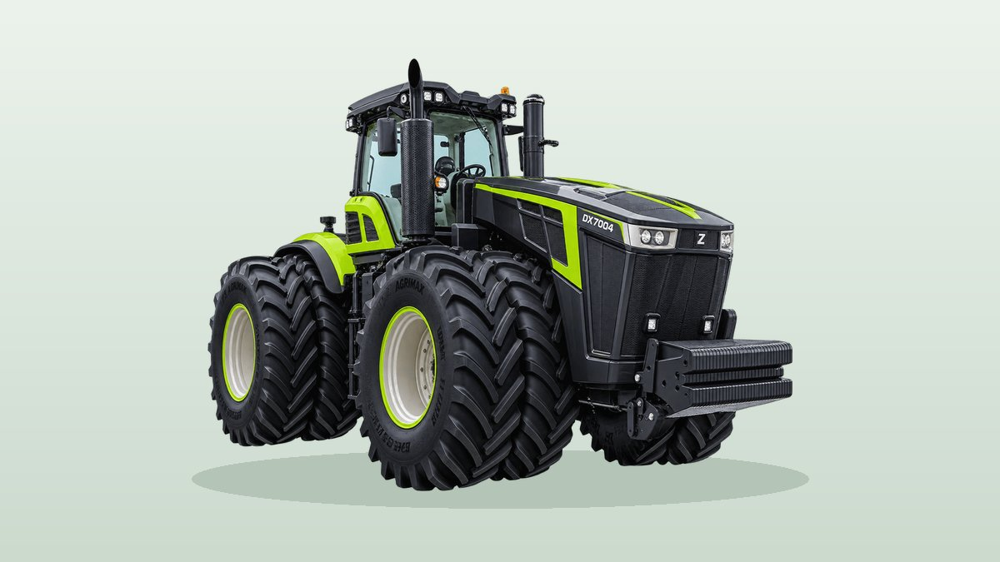

Traktor Hybrid Zoomlion Jadi Sorotan 2026: Diklaim Hemat Solar hingga 30%

Biaya bahan bakar adalah salah satu pengeluaran terbesar dalam operasional traktor. Karena itu, traktor hybrid kini menjadi salah satu teknologi yang paling banyak dibicarakan di industri mesin pertanian sepanjang 2026.
Zoomlion termasuk produsen yang paling gencar mengembangkan teknologi ini. Sepanjang 2026, Zoomlion memamerkan traktor hybrid, combine harvester pintar, dan solusi mekanisasi untuk berbagai jenis tanaman di pameran besar di Turki, Afrika Selatan, Thailand, Brasil, dan Tiongkok.
Apa Itu Traktor Hybrid?
Traktor hybrid menggabungkan mesin diesel dengan sistem penggerak listrik. Secara umum, mesin diesel dijaga tetap bekerja di putaran yang paling efisien, sementara sistem listrik membantu ketika beban kerja naik-turun, misalnya saat membajak tanah yang kepadatannya tidak merata.
Hasilnya, tenaga tetap besar dan halus, tetapi solar yang terbuang saat beban berubah-ubah bisa ditekan.
Seberapa Hemat?
Menurut Zoomlion, sistem hybrid pada traktornya dapat mengurangi konsumsi bahan bakar sekitar 20–30% dibanding traktor diesel konvensional, terutama pada pekerjaan dengan beban yang berubah-ubah.
Untuk model DV3504, Zoomlion menyebut sistem hybrid MiDD mampu memangkas penggunaan bahan bakar sekitar 20%.
Perlu dicatat, angka tersebut adalah klaim pabrikan. Penghematan sebenarnya tetap bergantung pada jenis pekerjaan, kondisi lahan, dan cara pengoperasian traktor.
Model yang Jadi Sorotan
DV3504
Traktor hybrid heavy-duty untuk pertanian lahan kering berskala luas. Bersama DQ2604, DV3504 menjadi salah satu model yang ditonjolkan Zoomlion di pameran Turki dan Afrika Selatan. Lihat detail DV3504.
DX7004
Zoomlion menyebut DX7004 sebagai traktor roda hybrid paling bertenaga di dunia, dan pengiriman unit pertamanya sudah dilakukan. Lihat detail DX7004.
C600 untuk Perkebunan Tebu
Di pameran AGRITECHNICA ASIA 2026 di Bangkok, Zoomlion meluncurkan mesin panen tebu C600 yang dirancang untuk kondisi perkebunan tebu di Asia Tenggara. C600 menggabungkan proses memanen, mengangkut, membuang daun, dan membersihkan tebu, serta dilengkapi sistem Z-Pilot dengan fitur kemudi otomatis dan penjadwalan kerja pintar. Lihat detail C600.
Kesimpulan
Traktor hybrid menawarkan jalan tengah antara tenaga besar dan biaya operasional yang lebih rendah. Untuk perkebunan dan lahan luas yang traktornya bekerja berjam-jam setiap hari, selisih konsumsi solar bisa berdampak besar pada biaya tahunan.
Tertarik dengan traktor hybrid Zoomlion? DV3504, DX7004, dan jajaran traktor hybrid Zoomlion lainnya tersedia melalui PT Diesel Agri Sukses Sejahtera, distributor resmi Zoomlion.
Butuh perhitungan kebutuhan untuk lahan Anda? Hubungi kami.
Sumber: PR Newswire, Zoomlion (X), PR Newswire — DX7004.